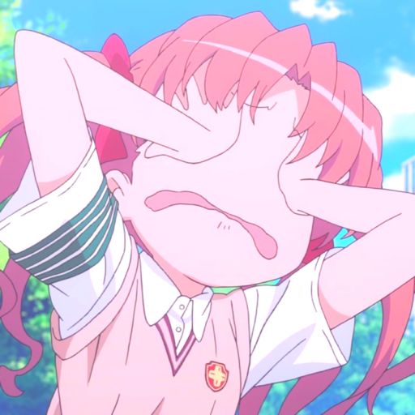
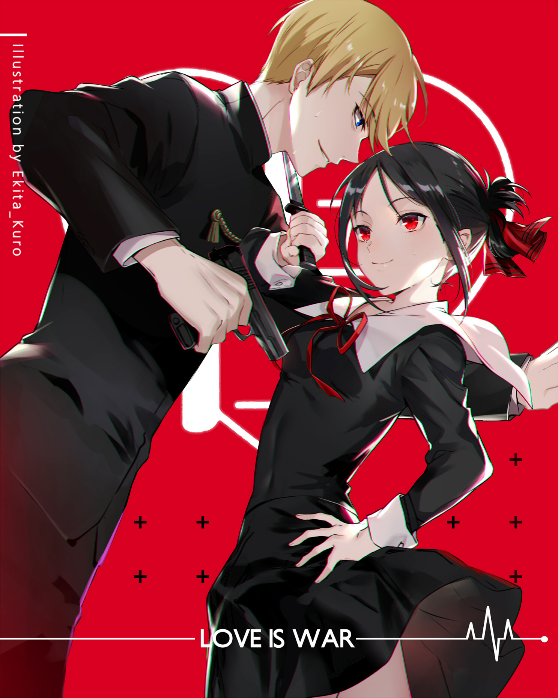
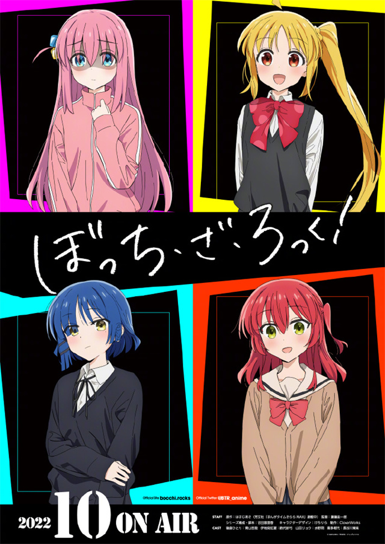
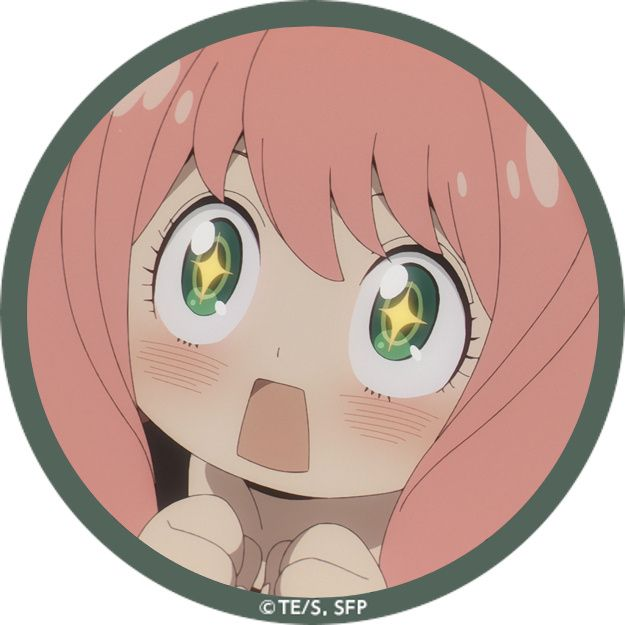
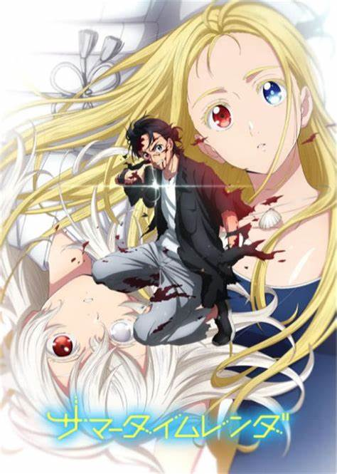

| TQL'index | Home | Genshin Impact | Animation | Novel | Favorite character | dormitory index |
|---|
介绍： 动漫(Animation)，即动画、漫画的合称，取这两个词的第一个字合二为一称之为“动漫”，并非专业术语。 |
 |
|---|
为什么看动漫？ 相比于其他常见爱好，看动漫的优点在于成本低、危害小、获取满足感强。
|
核心竞争力就是美少女！！（震声） |
|---|
| 我喜爱的动漫： |
|---|
|  |  |
|---|
辉夜大小姐想让我告白～天才们的恋爱头脑战～——恋爱喜剧（喜剧只是这部作品的重要依托，不是内核） |
孤独摇滚——灵魂的共鸣（代入感太强啦） |
|---|
这世上根本就没有神，浪漫与爱也不会对概率论产生任何影响，奇迹是不存在的。但是，不断地积累努力与思考，并且行动的那些人，必定都能被赐予某种情景。
人是为了被他人所爱，会扮演他人的理想，会隐瞒自己的不满，会去欺骗他人的生物。因此恋爱中的人总是心怀恐惧。从满是伪饰的自己，到充满谎言的对方，在这没有任何事物可以确信的空间里，必定需要有谁将自己的心意化作言语才行，不然的话就无法向前迈进。即使这意味着败北，也非得如此不可。——赤坂明（作者） |
①超神的声优发挥，强烈的共鸣之感 ②天马行空的演出，持续供应表情包 ③极为优秀的作画，极度舒适的节奏 ④鲜明的人物设计，点到为止的互动 |
|---|
|  |  |
|---|
间谍过家家——适合全年龄段的家庭喜剧 |
夏日重现——轮回智斗纯爱番 |
某科学的超电磁炮 ——经典老番 |
|---|
| 为了潜入名校，西国能力最强的间谍“黄昏”被下令组建家庭。但是，他的“女儿”居然是能够读取他人内心的超能力者！“妻子”是杀手？互相隐藏了真实身份的新家庭，面临考验与世界危机的痛快家庭喜剧就此展开！！ | 想和自己喜欢的人在一起，有什么问题？ ——潮 |
宏大的世界观 轻松欢快的节奏 个性鲜明的人物 |
|---|